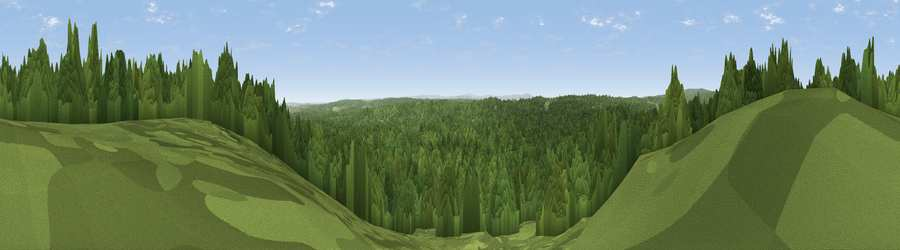

Viewpoint c11594_7501
#18723 in England · top 45% of its area beats it · —The view, rendered

A 360° render of this exact spot computed from the terrain model, tree cover and land cover — summer colours, afternoon light, calibrated against photographs of famous viewpoints. Real trees, hedges and buildings will differ in detail.
The panorama
Grey silhouette: terrain skyline in each direction (720 bearings, Earth curvature and refraction included). Dashed green: skyline with trees (+15 m) and buildings (+8 m) as obstacles. Blue strip: how far the ground is visible on each bearing.
Where the view opens
Wedge length = distance to the farthest visible ground on that bearing (vegetation-aware). Rings at 10, 25 and 50 km.
What fills the view
85% woodland · 15% grassland
Angular shares of the visible panorama (visual magnitude), not map area. Landscape diversity 0.19 (0–1 Shannon).
Key numbers
More beautiful places nearby
The staircase of upgrades: each row has a higher view potential than everything closer. Driving times are estimates from straight-line distance, calibrated against real road routing — check an actual route before setting out.
| Place | Direction | Drive | Score |
|---|---|---|---|
| Viewpoint c11541_7484 | SSW · 3 km | ~7 min | 55.5 |
| Viewpoint near Greenhaugh | NE · 3 km | ~8 min | 60.9 |
| Viewpoint near Greenhaugh | NE · 4 km | ~10 min | 71.2 |
| Viewpoint c11634_7288 | W · 11 km | ~21 min | 71.8 |
| Padon Hill | NNE · 15 km | ~27 min | 72.6 |
| Sighty Crag | W · 15 km | ~27 min | 74.7 |
| Viewpoint near Bewcastle | W · 16 km | ~28 min | 76.6 |
| Viewpoint near Bewcastle | W · 16 km | ~29 min | 78.9 |
55.11129, -2.39225 · source: screening · position refined by local search. Computed location — check access rights before visiting.